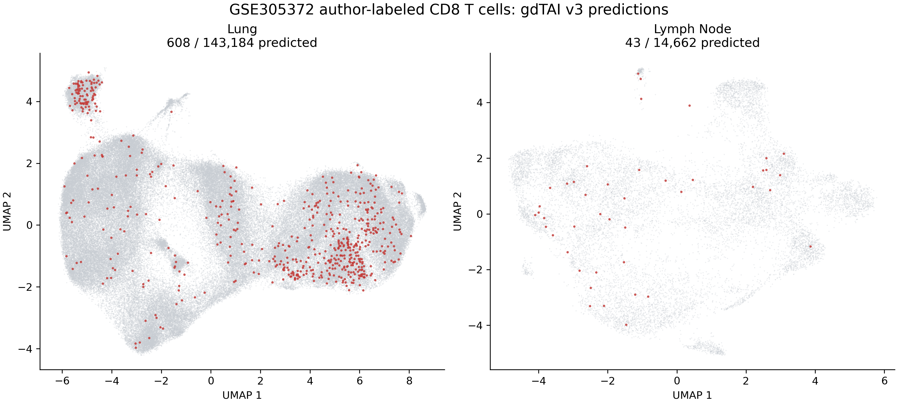
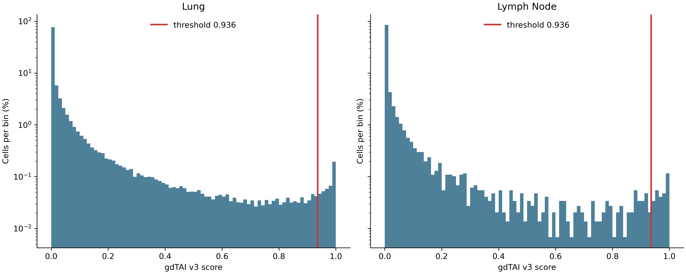
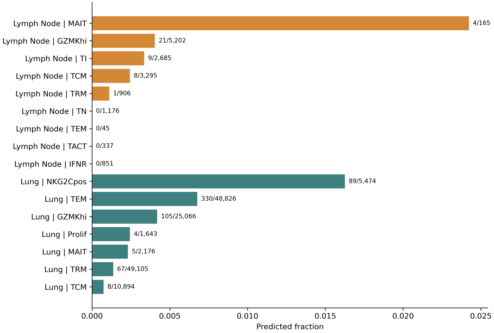

Input and method
The analysis downloaded only the two GEO CD8 processed objects and retained cells with the authors' cite.cell.type.tag == CD8A. It did not select cells using TRD, TRG, gdTAI score, or any model feature. Raw RNA counts for the packaged 210 genes were normalized as log1p(count * 10,000 / whole-transcriptome total counts). The promoted gdtai_v3 Round 14 artifact was applied at its fixed threshold of 0.936. This CD8A restriction means CD8-negative gamma-delta T cells are outside the analysis scope.
Model SHA256: 16dedc0081da9b8487887341232bcf8c9c9403dd3bbd72e04cab43d4cd7b2e09
Overall results
| scope | source_compartment | tissue | n_cells | n_predicted | predicted_fraction | median_score | p95_score |
|---|---|---|---|---|---|---|---|
| all_CD8A | 157846 | 651 | 0.0041 | 0.0004 | 0.1566 | ||
| lung | lung | 143184 | 608 | 0.0042 | 0.0004 | 0.1645 | |
| lymph_node | lung-associated lymph node | 14662 | 43 | 0.0029 | 0.0001 | 0.0816 |


Author phenotype clusters
98 predictions fall in the authors' NKG2C-positive or MAIT clusters. These populations receive explicit attention because cytotoxic T cells, MAIT cells, gamma-delta T cells, and NK-like states can share expression programs.
| source_compartment | author_cluster_id | author_cluster | n_cells | n_predicted | predicted_fraction | predicted_fraction_ci_low | predicted_fraction_ci_high |
|---|---|---|---|---|---|---|---|
| lung | 0 | TRM | 49105 | 67 | 0.0014 | 0.0011 | 0.0017 |
| lung | 1 | TEM | 48826 | 330 | 0.0068 | 0.0061 | 0.0075 |
| lung | 2 | GZMKhi | 25066 | 105 | 0.0042 | 0.0035 | 0.0051 |
| lung | 3 | TCM | 10894 | 8 | 0.0007 | 0.0004 | 0.0014 |
| lung | 4 | NKG2Cpos | 5474 | 89 | 0.0163 | 0.0132 | 0.0200 |
| lung | 5 | MAIT | 2176 | 5 | 0.0023 | 0.0010 | 0.0054 |
| lung | 6 | Prolif | 1643 | 4 | 0.0024 | 0.0009 | 0.0062 |
| lymph_node | 0 | GZMKhi | 5202 | 21 | 0.0040 | 0.0026 | 0.0062 |
| lymph_node | 1 | TI | 2685 | 9 | 0.0034 | 0.0018 | 0.0064 |
| lymph_node | 2 | TCM | 3295 | 8 | 0.0024 | 0.0012 | 0.0048 |
| lymph_node | 3 | TN | 1176 | 0 | 0.0000 | 0.0000 | 0.0033 |
| lymph_node | 4 | IFNR | 851 | 0 | 0.0000 | 0.0000 | 0.0045 |
| lymph_node | 5 | TRM | 906 | 1 | 0.0011 | 0.0002 | 0.0062 |
| lymph_node | 6 | TACT | 337 | 0 | 0.0000 | 0.0000 | 0.0113 |
| lymph_node | 7 | MAIT | 165 | 4 | 0.0242 | 0.0095 | 0.0607 |
| lymph_node | 8 | TEM | 45 | 0 | 0.0000 | 0.0000 | 0.0787 |

Donor audit
Calls are shown for every available author donor identifier so that donor concentration and small-denominator effects remain visible.
| source_compartment | donor.id.tag | n_cells | n_predicted | predicted_fraction | predicted_fraction_ci_low | predicted_fraction_ci_high |
|---|---|---|---|---|---|---|
| lung | L003 | 11569 | 16 | 0.0014 | 0.0009 | 0.0022 |
| lung | L004 | 5462 | 5 | 0.0009 | 0.0004 | 0.0021 |
| lung | L005 | 7527 | 17 | 0.0023 | 0.0014 | 0.0036 |
| lung | L006 | 1199 | 2 | 0.0017 | 0.0005 | 0.0061 |
| lung | L007 | 6425 | 47 | 0.0073 | 0.0055 | 0.0097 |
| lung | L008 | 2098 | 12 | 0.0057 | 0.0033 | 0.0100 |
| lung | L009 | 6148 | 79 | 0.0128 | 0.0103 | 0.0160 |
| lung | L010 | 9302 | 51 | 0.0055 | 0.0042 | 0.0072 |
| lung | L011 | 91 | 0 | 0.0000 | 0.0000 | 0.0405 |
| lung | L012 | 2637 | 28 | 0.0106 | 0.0074 | 0.0153 |
| lung | L013 | 1081 | 0 | 0.0000 | 0.0000 | 0.0035 |
| lung | L014 | 3827 | 8 | 0.0021 | 0.0011 | 0.0041 |
| lung | L015 | 5103 | 30 | 0.0059 | 0.0041 | 0.0084 |
| lung | L016 | 3895 | 29 | 0.0074 | 0.0052 | 0.0107 |
| lung | L017 | 4044 | 2 | 0.0005 | 0.0001 | 0.0018 |
| lung | L019 | 2 | 0 | 0.0000 | 0.0000 | 0.6576 |
| lung | L020 | 50 | 1 | 0.0200 | 0.0035 | 0.1050 |
| lung | L021 | 5483 | 11 | 0.0020 | 0.0011 | 0.0036 |
| lung | L022 | 3467 | 5 | 0.0014 | 0.0006 | 0.0034 |
| lung | L023 | 3432 | 16 | 0.0047 | 0.0029 | 0.0076 |
| lung | L024 | 4446 | 21 | 0.0047 | 0.0031 | 0.0072 |
| lung | L025 | 6124 | 6 | 0.0010 | 0.0004 | 0.0021 |
| lung | L026 | 4878 | 7 | 0.0014 | 0.0007 | 0.0030 |
| lung | L027 | 7870 | 42 | 0.0053 | 0.0040 | 0.0072 |
| lung | L028 | 4 | 0 | 0.0000 | 0.0000 | 0.4899 |
| lung | L030 | 3027 | 21 | 0.0069 | 0.0045 | 0.0106 |
| lung | L031 | 5836 | 14 | 0.0024 | 0.0014 | 0.0040 |
| lung | L032 | 1 | 0 | 0.0000 | 0.0000 | 0.7935 |
| lung | L033 | 3334 | 10 | 0.0030 | 0.0016 | 0.0055 |
| lung | L034 | 9820 | 63 | 0.0064 | 0.0050 | 0.0082 |
| lung | L036 | 8773 | 45 | 0.0051 | 0.0038 | 0.0069 |
| lung | L037 | 5973 | 17 | 0.0028 | 0.0018 | 0.0046 |
| lung | L040 | 256 | 3 | 0.0117 | 0.0040 | 0.0339 |
| lymph_node | L003 | 615 | 2 | 0.0033 | 0.0009 | 0.0118 |
| lymph_node | L004 | 2435 | 7 | 0.0029 | 0.0014 | 0.0059 |
| lymph_node | L005 | 2488 | 4 | 0.0016 | 0.0006 | 0.0041 |
| lymph_node | L009 | 932 | 7 | 0.0075 | 0.0036 | 0.0154 |
| lymph_node | L014 | 3972 | 7 | 0.0018 | 0.0009 | 0.0036 |
| lymph_node | L024 | 1838 | 11 | 0.0060 | 0.0033 | 0.0107 |
| lymph_node | L035 | 876 | 0 | 0.0000 | 0.0000 | 0.0044 |
| lymph_node | L037 | 617 | 1 | 0.0016 | 0.0003 | 0.0091 |
| lymph_node | 889 | 4 | 0.0045 | 0.0018 | 0.0115 |
TCR-gene expression quadrants
| source_compartment | tcr_gene_quadrant | n_cells | n_predicted | predicted_fraction | median_score |
|---|---|---|---|---|---|
| lung | TRDC+TRDV+ | 359 | 142 | 0.3955 | 0.8078 |
| lung | TRDC+TRDV- | 286 | 8 | 0.0280 | 0.0131 |
| lung | TRDC-TRDV+ | 2665 | 399 | 0.1497 | 0.2769 |
| lung | TRDC-TRDV- | 139874 | 59 | 0.0004 | 0.0004 |
| lymph_node | TRDC+TRDV+ | 19 | 3 | 0.1579 | 0.2497 |
| lymph_node | TRDC+TRDV- | 106 | 3 | 0.0283 | 0.0018 |
| lymph_node | TRDC-TRDV+ | 257 | 35 | 0.1362 | 0.1188 |
| lymph_node | TRDC-TRDV- | 14280 | 2 | 0.0001 | 0.0001 |
TRA/TRB sequencing evidence
| source_compartment | has_TRA_evidence | has_TRB_evidence | has_paired_TRA_TRB_evidence | n_cells | n_predicted | predicted_fraction |
|---|---|---|---|---|---|---|
| lung | False | True | False | 22181 | 318 | 0.0143 |
| lung | True | False | False | 4125 | 53 | 0.0128 |
| lung | True | True | True | 116878 | 237 | 0.0020 |
| lymph_node | False | True | False | 2676 | 31 | 0.0116 |
| lymph_node | True | False | False | 418 | 4 | 0.0096 |
| lymph_node | True | True | True | 11568 | 8 | 0.0007 |
Reproducibility
Source: GEO GSE305372. Study: Fajardo-Rosas et al., Nature Immunology (2026).
Workflow: workflows/intake/export_gse305372_cd8_model_payload.R followed by workflows/gdtai/run_gdtai_gse305372_cd8.py.